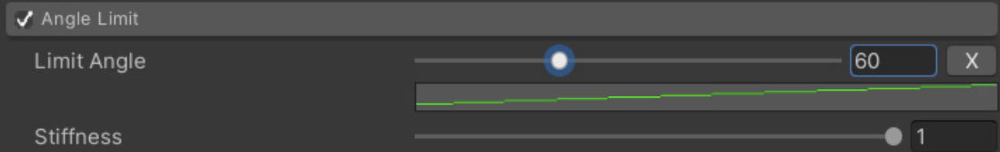
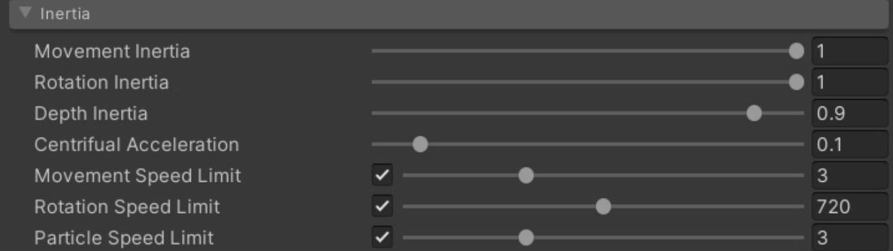
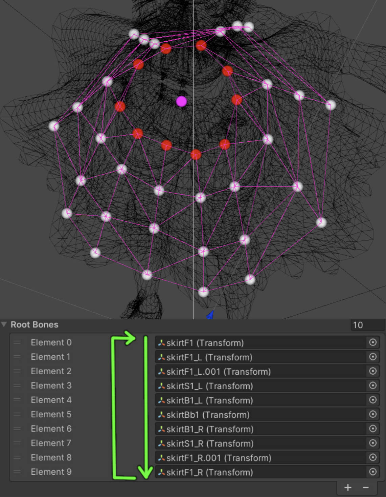

MagicaCloth2
Table of Contents
- MagicaCloth2
- Base
- Performance
- UseCase
- Source Code
- 参考资料
MagicaCloth2 note.
<!– more –>
MagicaCloth2
Base
BoneCloth
简介
BoneCloth 基于 Unity 的 Transform 层级结构来进行布料模拟。非常适用于摆动的头发和挂件。
- 通过操纵 Transform 来表现摇动
- 运算处理消耗比较低，可被大量使用
使用
Cloth Type 选择 Bone Cloth
Root Bones 列表中只需要放置 Transform 层级结构的根节点就可以了
MeshCloth
简介
Mesh Cloth 基于 Mesh 顶点来进行布料模拟，和 BoneCloth 相比，Mesh Cloth 可以表现更加真实的晃动，但是，其运算处理消耗会更高。
- 通过操作 Mesh 顶点来表现晃动
- 即使 Mesh 没有骨骼，也可以使用该技术
- 运算处理消耗比较高，需要注意性能问题
原理
Render mesh and Proxy mesh
Proxy mesh 是 MeshCloth 中一个重要的概念。MeshCloth 不会使用 Render mesh 来进行模拟，原因主要有下面 3 点：
- 如果直接使用 render mesh 进行模拟，顶点数量可能会很多，导致模拟运算的消耗非常巨大
- 三角连接结构非常不适用于物理模拟
- 为了表现，很多情况下会将一个 mesh 分为多个 mesh（如，为了让裙子内外使用不同材质，将裙子分为两个 mesh），直接使用 Render mesh，就需要分开模拟裙子的内部和外部了。
基于 render mesh 进行顶点缩减可以得到对应的 proxy mesh，proxy mesh 是一个 virtual mesh，其只在运行时存在于内存中。MeshCloth 会在 proxy mesh 上执行所有的模拟运算，然后再将结果反应用于原始的 render mesh。
How Simple should it be? 应该将 proxy mesh 简化到何种程度
- proxy mesh 越简单，性能会越好
- 应该简化到 render mesh 没有细小突起的程度
- 简化的太多，会导致碰撞检测变弱。render mesh 和 proxy mesh 差异过大会导致显示变得不稳定
使用
模型导入需要开启 Read/Write
对于 SkiningMesh，顶点对应的最大骨骼数量最大为 4
通过下面所示 Reduction Setting 选项设置 Proxy Mesh 的简化程度：
| Simple Distance | 不考虑 mesh 的整体结构，简单将邻近的顶点合并 |
| Shape Distance | 基于 mesh 的形状将邻近的顶点进行合并，若多个顶点没有链接为一个面，即使他们邻近也不会被合并 |
根据网格的形状连接附近的顶点。
未作为曲面连接的顶点即使在附近也不会合并
Tips： 运行时无法修改上面参数。
Collision
简介
对于角色衣服模拟来说，衣服和人体的碰撞检测是必不可少的。碰撞检测的设置对于 BoneCloth 和 MeshCloth 是相同的。
MagicaCloth 有如下 4 种碰撞控制机制：
| Collider collision detection | 使用 Colliders 来进行碰撞检测。目前实现了 3 种 SphereCollider PlaneCollider CapsuleCollider |
| Backstop | 通过设置顶点法线方向可以进入的距离和半径来防止布料进入人体的方法 |
| Self-collision | 自碰撞。防止衣服陷入自身 |
| mutual collision | 互相碰撞。防止衣服陷入其他衣服 |
本结只讨论 Collider collision。
原理
Collider 的碰撞检测原理很简单，如下图所示：其会将顶点挤出从而避免顶点进入 collider 内部。通过按照角色身体形状来放置 collider，就可以避免布料进入人体
collision mode
通过 collision mode 你可以选择 proxy mesh 和碰撞体如何进行碰撞检测。
- vertex sphere mode (Point Mode)
将 proxy mesh 的顶点当作球，顶点对应的球的大小可以通过 Radius 来设置。对顶点对应的球和 collider 进行碰撞检测。
Point Mode 运算处理消耗比较小，但是，当 collider 尺寸太小时，会导致碰撞检测失效，如下图：
- edge mode (Line Mode)
对 proxy mesh 的边和 collider 进行碰撞检测。边的粗细程度可以通过 Radius 来设置。
Edge Mode 的好处是，当 collider 比较小时，碰撞检测依然有效。如下图所示：
但是，Edge Mode 运算处理消耗比 Point Mode 要高，需要注意性能问题。
friction
摩擦力控制着当 collider 和顶点接触后，滑动的难易程度。
Parameter Setting
简介
为了达到理想的运动效果，参数设置是必不可少的。
Understand the baseline
进行参数设置时，理解 baseline 的概念非常必要。baseline 是从 proxy mesh 的固定顶点开始并沿着 mesh 表面连接到末端移动顶点的路径。
一个 baseline 包含起始点和结束点，还有深度信息（在 BoneCloth 的 Gizmos 参数中，可以开启 BaseLine 和 Depth 的显示）。baseline 的起始点的深度为 0，结束点的深度为 1，每个顶点都会有对应的深度值。
如下图所示，我们将 Root GameObject 作为 BoneCloth 的 Root，得到的 baseline 如图中红线所示：
Tips: Runtime 下，baseline 是不变的 。
Baseline with BoneCloth
对于 BoneCloth，baselines 是从 Transforms 树形层次结构构建的，所以其和 Transform 的层级结构一样。
Tips: Runtime 下，baseline 是不变的 。
层级结构不同，baseline 也会不同，导致模拟的结果也不同，如下图所示：
在层级结构中，放置位置重叠的节点会导致模拟错误，如下面视频所示：
#+begin_export html
<video class="wp-video-shortcode" width="1024" height="768" preload="metadata" controls="controls">
<source type="video/mp4" src="./MagicaCloth2/baseline-error.mp4"/>
</video>
Baseline with MeshCloth
MeshCloth 相对复杂一些，其 baselines 是依据表面的连接自动计算得到的。MeshCloth 的 baseline 会根据表面的连接状态和固定顶点的分布而发生变化。
Tips: Runtime 下，baseline 是不变的 。
下图为，MagicaCloth2 Demo 中，UnityChanKAGURA 的裙子对应的 baseline。
Relationship between depth and parameters
baseline 上每个顶点都有一个深度值，MagicaCloth 有很多参数的值都依赖于该深度值。下图所示 Limit Angle 参数的相关说明：
Parameter type
Force
Gravity 控制重力大小
Gravity Direction 控制重力方向
Gravity Falloff 会根据 cloth 的朝向来减少重力的效果。例如，如果 Falloff 为 1.0，若衣服的朝向和起始朝向相同，则不会对衣服应用重力。
Damping 用于控制空气阻力。减低空气阻力(Damping)，顶点将不容易复位。相反，若增加空气阻力(Damping)，则顶点移动会减慢。
Angle Restoration
运动模拟会将 baseline 的每条边旋转回原来的位置。Angle Restoration(角度复原)参数是控制运动的最重要参数，毫不夸张地说，该参数决定了运动的主要表现。
Stiffness (刚度)是在一个 pass 中校正的旋转角度量（Tips：一次物理模拟有时候由多次 pass 组成）。增加 Stiffness（刚度）可加快恢复速度。
Velocity Attenuation 是恢复期间应用于顶点的速度衰减量。如果你降低它，加速度会更强，它会像弹簧一样反弹。
调整这两个属性需要一定的熟悉度和经验。一个好的开始是加载一个预制参数并尝试模仿它。
Angle Limit
限制 baseline 的每条边从其原始 pose 弯曲的角度

将裙子的角度限制在一定范围内以保持其形状也是一个好主意。
Shape Restoration
通过下列三种方式来维持 proxy mesh 的形状:
| Distance | 网格的可拉伸性。 |
| 移动以保持每个顶点和连接的顶点之间的距离不变 | |
| 通常 1.0 就可以了。 | |
| 不过，如果外面像旋转的裙子那样稍微拉长一点更好看的话，在终点附近用曲线削弱回复力效果也不错。 | |
| Tether | 限制顶点与其 baseline 起点的接近程度。 |
| 只能设置收缩范围。 | |
| 如果减低 Compression，顶点将无法靠近它们的起点。 | |
| 反之，如果提高 Compression，顶点就可以自由移动 | |
| 降低该值会使网格形状更难变形, 从而可以避免布料过渡收缩。然而，在某些情况下，由于运动的自由度降低，运动可能会很笨拙。 | |
| 一般建议设置为 0.8 以上，不要减低太多 | |
| Triangle Bending | mesh 弯曲抗性 |
| 控制相邻的三角形恢复到原来的角度。 | |
| 该参数对保持网格形状方面起着重要作用。 | |
| 1.0 通常没问题。 | |
| 若 proxy mesh 中不存在三角形，则不执行任何操作 |
Inertia
该参数决定了衣服运动如何影响顶点。这是决定运动的第二重要的参数(第一重要的参数为 Angle Restoration)。
一件衣服总会有一个中心点。该中心点通常由所有不动点的分布决定，在 SceneView 中，中心点会被显示为一个粉色的球，如下图：
当这个中心移动时，它的平移力和旋转力会传递到顶点。inertia 参数就是用来限制传递给顶点的力的。
例如，如果晃动对于角色的移动来说过大，则可以添加 restrictions（限制）以抑制整体晃动。

有四种类型的 restrictions（限制），每种都有自己的特点：
| Movement Inertia | 减少运动力或旋转力本身。 |
| Rotation Inertia | 例如，如果该属性为 0.1，则只有 1/10 的布料运动会添加到顶点。 |
| 这使得即使布料高速移动也可以抑制晃动。 | |
| 但是，即使布料缓慢移动，移动力也会降低，因此也有晃动变得极小的不良影响。 | |
| Depth Inertia | 使用顶点深度减少惯性。 |
| 简单地说，如果你增加这个属性，深度越接近起点，移动就越困难。 | |
| 终点不受减少。 | |
| 当不希望起点周围的区域移动太多时（例如裙子或头发），这很有效。 | |
| 但请注意，如果减少起点附近的惯性，则整体运动会变弱。 | |
| Movement Speed Limit | 以设定的速度截断移动力或旋转力 |
| Rotation Speed Limit | 例如 Movement Speed Limit=2.0，如果角色的移动速度在 2m/s 以内，力将原样传递，如果超过 2m/s， |
| 无论移动的多快，也不会再对顶点施加更多的力。 | |
| 有了这个限制，无论是慢速移动还是高速移动，都可以将晃动限制在一定范围内。 | |
| 基本上，我们建议在 Movement Inertia/Rotation Inertia 上使用它。 | |
| Particle Speed Limit | 限制每个顶点的最大速度。 |
| 这可以缓解长带状物体的末端因离心力而过度向外凸起的现象。 | |
| 但是，如果将值降低到 1.0（1m/s）以下，碰撞检测的精度将会降低，因此降低值时要小心。 |
Movement Limit
参考 Backstop 部分介绍。
Collider Collision
参考 Collision 部分介绍。
Self Collision
该参数同时控制 Self Collision() 和 Mutual Collision。该功能目前处于实验阶段。
self collision 和 Mutual Collision 需要大量的碰撞计算，其运算处理消耗非常高。建议只在 PC 上使用。
Tuning tips (参数调节秘诀)
先调节重要参数
尽管参数数量很多，但是真正决定运动效果的参数只有下面这些，可以优先调节这些重要的参数
| Force | 重力和空气阻力。 这和顶点运动有很大关系 |
| Angle Restoration | 旋转复原。它是决定整体运动的最重要参数。最好先从这里调整。 |
| Inertia | 如果角色奔跑或跳跃时布料移动过多，请调整该参数。 |
运行起来进行调节
在运行时进行参数调节可以获得直观反馈
利用好预制参数
可以先选择一个预制参数，看是否接近我们想要的运动效果。然后，再在次基础上进行调节。
保存预制参数
将精心调整的参数保存为预制参数。在运行时，也可以保存预制参数。
利用好组件 Copy 功能
运行时调整的参数无法被保存，可以通过组件 Copy 功能，来解决该问题。
Backstop
简介
backstop 是一种碰撞处理方法，其会限制进入碰撞体的距离，该距离基于物体顶点的 normal 方向。使用该技术，可以很容易避免头发的刘海部分陷入角色头模型内，避免 T 恤陷入角色身体模型内。
这种技术机制简单，运算处理消耗也比较低。
原理
Backstop 原理很简单，其限制 proxy mesh 的每个顶点相对于 normal 方向运动的范围。如下图所示：
上图显示的 proxy mesh 的 vertices(白点)和 normals(绿色箭头)是模型原始 pose 或动画 pose 对应的位置，而不是当前经过模拟运算后移动的位置。
首先，顶点只能在蓝色的球内移动，该球的半径为 Max Distance. 这是第一个限制。
其次，顶点只能在红色的 Backstop Collision 球外移动，该球的半径为 Backstop Radius。将顶点原始位置沿原始 normal 反方向移动 BackstopDistance+BackstopRadius 距离就是 Backstop Collision 球心的位置。这是第二个限制。
可以同时开启上面两个限制，也可以只启用其中一个限制。
Tips:
Backstop 是基于原始 pose 或 动画 pose 来限制 proxy mesh 各个顶点的移动范围的，为了让 backstop 工作，Transform 或 Mesh 跟随动画非常重要。
Backstop 对模型顶点的 normal 有依赖，所以只能模拟单侧的碰撞，当碰撞发生在另一侧时，会导致不稳定的问题，如下面视频所示。
使用
这里使用一个裙子作为示例，来说明 backstop 的高级设置。backstop 主要用来避免裙子顶点进入人体，但是，人体一直在做动画，其姿势会不停变化。
Importance of animation posture
在这里，动画的姿势非常重要。这里的姿势是指未进行物理模拟时，Transform 或 Mesh 在动画作用下的形变。例如，下面角色的裙子被蒙皮到了左腿和右腿上。所以，裙子会跟随腿做动画。这是理想的情况，这种情况下你可以设置一个 backstop，来防止穿模。
但是，下面的角色没有将裙子蒙皮到腿部。当角色播放跑步动画时，腿会穿过裙子，这种情况下，将无法使用 backstop。
backstop 是在动画 pose 基础上施加限制。为了让 backstop 工作，Transform 或 Mesh 跟随动画非常重要。
Animation Posture Adjustment
解决上面问题的最好方式是，为裙子分配腿部骨骼权重，从而让裙子跟随腿运动。
或者，为裙子添加骨骼，并且调整每个动画(如，跑，跳，攻击等等)，使得裙子跟随腿部运动。
在美术人员创作的动画姿势上叠加布料模拟是解决穿模问题的最健壮的方法，推荐使用这种方案。
若由于某种原因无法进行美术人员修正，则可以使用自定义蒙皮功能作为替代方案。
Check Animation Posture
在 MagicaCloth 的 Gizmos 设置面板，可以开启动画姿势(Animation Posture)显示，如下：
下面是 SceneView 中所展示的动画姿势：

Using Custom Skinning
如果由于某种原因无法进行美术人员修正，则可以使用自定义蒙皮功能作为替代方案。
该功能会将 proxy mesh 蒙皮到指定的骨骼上。如果动画姿势已经正确设置，则不需要使用该功能。
开启 Custom Skinning，并且添加蒙皮骨骼，对于 KAGURA 裙子，可以安装如下设置骨骼：
添加的骨骼使用 gizmo 显示为黄色的线，如下图所示：
custom skinning 会让 proxy mesh 跟随腿运动。如下图所示，从而让 backstop 可以工作。

Tips:
custom skinning 也支持 BoneCloth。但是，请注意 custom skinning 只是一个替代方案，其效果并不是很精确。
Paint Valid Vertices
可以使用 vertex paint 来精确控制哪些顶点开启 backstop，哪些顶点关闭 backstop。
Animation Posture Rotio
MagicaCloth 内部会保存初始的姿势和动画姿势。Backstop 总是会在动画姿势基础上进行计算。
但是，一些约束可以指定是基于初始姿势进行恢复，还是基于动画姿势进行恢复。这就是通过 animation posture ratio 来实现的，可以在基础面板来设置 Animation Posture Ratio。
Animation Pose Ratio 的值越接近 1.0，表示恢复计算越多基于动画姿势；Animation Pose Ratio 的值越接近 0.0 表示恢复计算越多基于初始姿势进行计算。
Animation Pose Ratio=0.0，会生成一个恢复力以恢复回初始姿势
Animation Pose Ratio=1.0，会生成一个恢复力以恢复回当前动画姿势
Animation Pose Ratio 为其他值，初始姿势和前动画姿势按照 Animation Pose Ratio 比例进行混合得到新姿势，会生成一个恢复力以恢复回该新姿势。
Affected Constraints
Animation Pose Ratio 会影响如下 3 个约束:
- Angle Restoration
- Angle Limit
- Shape Restoration
Setting Guidelines
基本上，将其保留为 0.0 就可以了。在大多数情况下，这样设置，布料的运动更加稳定。
但是如果动画姿势变形比较大，可能增加比例会更稳定。此外，如果动画姿势完全由艺术家控制，则值越高越稳定。在这种情况下，请尝试在观察运动的同时从大约 0.5 的设置进行调整。
BoneCloth advanced settings
BoneCloth mesh connection
BoneCloth 有一个功能可用于自动从注册的 Transforms 创建一个 mesh。使用该功能，Transforms 之间的连接会变得更强，形状保持和碰撞检测也会变得更强。因为，边是横向连接的，所以你可以通过使用 edge collision 来进一步增强碰撞检测。
可以通过下图中的选项来开启该功能，Line 为不开启，另外 3 个选项(Automatic Mesh, Sequential Loop Mesh, Sequential Non Loop Mesh)为开启：
开启创建 Mesh 时，3种不同选项有不同的特点。
未开启创建 Mesh （line mode）
以下图所示的裙子为未开启创建 Mesh 的情况（即 Connection Mode 为 Line 时）：
automatic mesh
自动连接附近的 Transforms。依赖于 Transform 的位置，该模式下生成的 mesh 形状可能并不自然。
sequential loop mesh
按照 Root Bones 的顺序横向连接 Transforms。所以，Root Bones 的注册顺序非常重要，最后一个 Root Bone 会和第一个 Root Bone 相连形成一个循环。

sequential non loop mesh
按照 Root Bones 的顺序横向连接 Transforms。所以，Root Bones 的注册顺序非常重要，最后一个 Root Bone 不会和第一个 Root Bone 相连。
Transform interpolation rate
Bone Cloth 可以调整每个 Transform 的旋转姿势(rotation posture)。通过下面的选项来进行调整：
Root Rotation
root rotation 用于调节固定顶点（Fixed Transform）的旋转。
0 表示保持原始姿势不进行旋转。
1 表示向子节点方向旋转，多个子节点时(Tips: 只考虑直接相连的子节点)，旋转方向会进行平均。
0.5 表示中间。
Rotational Interpolation
rotational interpolation 用于调节可动顶点（Movement Transform）的旋转。
0 表示向父节点方向旋转
1 表示向子节点方向旋转，多个子节点时(Tips: 只考虑直接相连的子节点)，旋转方向会进行平均。
0.5 表示中间。
末端节点没有子节点，所以末端节点永远向父节点旋转。
Performance
MagicaCloth performance dependent
MagicaCloth 使用了 Unity DOTS 技术(Data-Oriented Technology Stack 面向数据的技术栈)。因此，其完全依赖于 CPU，也就是说对 GPU 不会造成性能开销。
DOTS 支持多线程，因此，CPU 核数越多，并行执行的可能性越高，性能也就会越好。但是，在 Android 和 iPhone 设备上使用时需要倍加小心。移动平台的 CPU 通常有大核和低功耗的小核，即通常所说的大小核。例如，一个终端有 8 个核，大多数情况下，其会被分为 4 个大核和 4 个小核。Unity 只会在大核上运行 DOTS。所以，8核中只有 4 个核会被 DOTS 利用。在 PC 平台上则不会出现该问题。
Creation and execution of cloth data
MagicaCloth 需要各种数据来执行模拟，这些数据被称为 cloth data。在运行时，会实时生成需要的 cloth data。cloth data 的创建会消耗一笔可观的计算时间，通常大概需要 20ms 到 100ms。创建 cloth data 的处理过程会在后台线程执行，所以，对主线程不会有很大影响。另外，当有多个衣服时，多个 cloth data 的创建会在多个后台线程并行执行。
衣服模拟需要等待对应的衣服数据创建完成后才能开始。所以，在角色创建到模拟开始会有几帧的延迟。
Notes on Editor Execution
Magica Cloth 所使用的 Burst 和 JobSystem 在 Editor 下的执行效率比 App 版本要低。所以，editor 下 profiler 的情况和 app 下 profiler 的情况会不同。
Burst JIT Compiler
在 Editor 下时，Burst 的编译是在运行时进行的(Just-In-Time Compiler)。在 Editor 环境下，第一次使用 MagicaCloth 时，编译时间会花费几百毫秒或更长时间。所以，从开始运行到开始第一次模拟会有明显的延迟。该问题只在 Editor 环境下存在，编译好的 App 版本没有该问题。
为了缓解该问题，在 PlayerSettings/Editor/EnterPlayModeSettings 处选择使用 Enter Play Mode Options，使用该选项，在 Editor 下当重复运行时，Burst 不会多次执行 JIT 编译。
JobsDebugger processing load
在 Editor 下，JobsDebugger 会持续监听 job 的操作。这会导致 job 的执行时间比原本要长，并且在 job 之间会有空隙。如果 Editor 下性能比较差，你可以考虑在如下位置关闭 JobsDebugger:
老版本
unity 2022.2.19f1 版本
SafeCheck processing load
类似地，editor 环境下，会执行 Burst 安全检测和内存泄漏检测。这也会导致 Editor 下性能较差，可以在如下位置关闭：
安全检测：
内存泄漏检测：
Errors will no langer be reported
关闭上面提到的检查后，会导致错误不再被提示。所以，程序开发人员应该在开发阶段在自己设备上打开这些检查，以发现和修正错误。其他角色可以关闭这些检查，以提升开发效率。测试性能时，应该以编译的 app 版本为准。
List of processing loads
下面列出 MagicaCloth 不同功能的性能消耗指数，星级越高性能消耗越大：
Cloth type
| MeshCloth | 4 星 | MeshCloth 比 BoneCloth 消耗要高很多，因为除了模拟之外，它还涉及 proxy mesh 蒙皮和写回渲染网格。 |
| 因此，移动设备使用该功能时，需要注意性能问题 | ||
| BoneCloth | 1 星 | BoneCloht 性能消耗比较低。 |
| 该功能通常不会导致性能问题 |
Collision processing
| Self Collision | 10 星 | 自碰撞是所有功能中性能消耗最高的功能。 |
| 该功能基本上是为具有大量 CPU 内核的桌面 PC 所设计的。 | ||
| 如果在移动设备上使用，请尽可能减少代理网格中的顶点数量并密切关注性能 | ||
| Mutual Collision | 8 星 | 相互碰撞比自碰撞性能消耗稍微低一些，因为它只确定与对方碰撞 |
| 但是，整个处理过程和自碰撞并没有什么不同，所以仍然需要密切注意性能问题 | ||
| Edge Collision | 4 星 | 边缘碰撞比点碰撞性能消耗要高几倍 |
| 你应该只有在点碰撞出现问题时再尝试使用边缘碰撞 | ||
| Point Collision | 2 星 | 和上面几种碰撞相比，该技术性能消耗低很多 |
| Backstop | 1 星 | Backstop 的处理负载最低，因为它只需要很少的计算。可以放心使用。 |
UseCase
Runtime Construction
MagicaCloth2 支持运行时构建。具体实现可以参考 RuntimeBuild Demo 场景。
Construction procedure
构建过程分为如下 3 步：
- 生成 MagicaCloth 组件
- 设置参数
- 开始创建和运行 cloth data
Vertex paint settings
在 Editor 下，可以使用 vertex paint 特性来手动为每个顶点设置属性。但是，在运行时，不可以使用该方法。因此，在运行时，MeshCloth 会需要使用预先准备的 paint map 来设置顶点属性。
Runtime delay
MagicaCloth2 在运行时，构建 cloth data。会在后台线程执行构建，所以对主线程影响不大。但是，构建操作会花费几帧时间，所以从开始构建到真正开始模拟有几帧延迟。
Example
/// <summary> /// BoneCloth construction example (1). /// Set all parameters from a script. /// </summary> void SetupHairTail_BoneCloth() { if (character == null) return; var obj = new GameObject("HairTail_BoneCloth"); obj.transform.SetParent(character.transform, false); // add Magica Cloth var cloth = obj.AddComponent<MagicaCloth>(); var sdata = cloth.SerializeData; // bone cloth sdata.clothType = ClothProcess.ClothType.BoneCloth; sdata.rootBones.Add(gameObjectContainer.GetGameObject("J_L_HairTail_00_B").transform); sdata.rootBones.Add(gameObjectContainer.GetGameObject("J_R_HairTail_00_B").transform); // setup parameters sdata.gravity = 3.0f; sdata.damping.SetValue(0.05f); sdata.angleRestorationConstraint.stiffness.SetValue(0.15f, 1.0f, 0.15f, true); sdata.angleRestorationConstraint.velocityAttenuation = 0.6f; sdata.tetherConstraint.distanceCompression = 0.5f; sdata.inertiaConstraint.particleSpeedLimit.SetValue(true, 3.0f); sdata.colliderCollisionConstraint.mode = ColliderCollisionConstraint.Mode.None; // start build cloth.BuildAndRun(); }
Runtime Changes
MagicCloth2 支持在运行时修改参数。
Change procedure
修改过程分为如下 3 步：
- 从 MagicaCloth 组件获取 SerializeData
- 修改 SerializeData
- 调用 MagicaCloth 组件的 SetParameterChange 方法，通知系统参数发生变更
Tips:
并非所有参数都可以被修改，源代码中使用注释标记了哪些参数可以被修改，哪些参数支持通过 Presets 来导入导出
/// [OK] Runtime changes. /// [NG] Export/Import with Presets
Example
using MagicaCloth2; using UnityEngine; public class RuntimeParameterTest : MonoBehaviour { public MagicaCloth cloth; public ColliderComponent col; bool sw = false; void Start() { } void Update() { if (cloth == null || col == null) return; // Check if MagicaCloth is running if (cloth.IsValid() == false) return; if (Time.frameCount % 100 == 0) { sw = !sw; UpdateParameter(); } } /// <summary> /// Parameter change. /// </summary> void UpdateParameter() { // It manages all parameters that cloth.SerializeData can change at runtime. var sdata = cloth.SerializeData; if (sw) { // add collider. sdata.colliderCollisionConstraint.colliderList.Add(col); // gravity on sdata.gravity = 5.0f; } else { // remove collider sdata.colliderCollisionConstraint.colliderList.Remove(col); // gravity off sdata.gravity = 0.0f; } // change notification cloth.SetParameterChange(); } }
Dress-up process
MagicaCloth 换装支持。具体实现可以参考 RuntimeDressUp Demo 场景。
Source Code
MagicaCloth 的物理模拟是如何驱动的？
MagicaManager 通过 PlayerLoopSystem 和 PlayerLoop 来触发自身的 UpdateMethod。
在 MagicaManger.cs SetCustomGameLoop 函数中向 PlayerLoopSystem 注入自身的 UpdateMethod。
在 ClothManager.cs Initialize 函数中注册具体的更新函数。
MagicaCloth 运动模拟算法是什么？
magica cloth 采用了半隐式积分法(Leapfrog 方法)来进行质点运动模拟。
具体实现在 SimulationManager.cs StartSimulationStepJob。
如何指定每帧迭代次数?
总结：
1 指定每秒迭代次数 90 次（即 simulationDeltaTime = 0.01111）
2 指定单次更新的最大迭代次数为 3 次 (refDeltaTime = simulationDeltaTime *3=0.03333)
3 当渲染频率为 30FPS 时，(deltaTime = min(deltaTime, refDeltaTime)) = refDeltaTime = deltaTime
迭代次数为 deltaTime / simulationDeltaTime = 3, 一个渲染帧内迭代次数 = 3，迭代频率 = 90FPS
3 当渲染帧率小于 30FPS 时 (deltaTime = min(deltaTime, refDeltaTime)) = refDeltaTime
迭代次数为 deltaTime / simulationDeltaTime = 3，一个渲染帧内迭代次数 = 3, 迭代频率 < 90FPS
4 当渲染帧率大于 30FPS 时 (deltaTime = min(deltaTime, refDeltaTime)) = deltaTime)
迭代次数为 deltaTime / simulationDeltaTime < 3，一个渲染帧内迭代次数 < 3，迭代频率 > 45FPS
Update Mode
MagicaCloth 支持三种更新模式，不同模式只是影响 deltaTime 的计算
- Normal deltaTime = Time.deltaTime，更新频率 = MonoBehavior.Update 更新频率 * Time.timeScale
- UnityPhysics deltaTime = Time.fixedDeltaTime，更新频率 = MonoBehavior.FixedUpdate 更新频率 * Time.timeScale
- Unscaled deltaTime = Time.unscaledDeltaTime，和 MonoBehavior 的 Update 方法更新频率相同
MagicaCloth 碰撞处理算法是什么？
具体实现在 ColliderManager.cs StartSimulationStepJob。
MagicaCloth 网格简化算法, 以及简化后执行的操作？
没有使用很复杂的简化算法。
简化算法
SameDistanceReduction
该网格简化算法修改了 VirtualMesh 的如下数据：
- vmesh.boneWeights
- vmesh.attributes
- vmesh.localNormals
- 首先，确定算法输入参数
- maxSideLength = boundingBox.Value.MaxSideLength
- arg: sameDistance = maxSideLength * saturate(Define.System.ReductionSameDistance=0.001)
- 其次，利用 proxy mesh 的顶点建立 GridMap 结构。（可指定 Box 区域和 Sphere 区域来返回区域内的顶点）
- src: InitGridJob()
- gride size 按照如下方法计算
- GridSize = mergeLength * 2.0f;
- mergeLength = sameDistance
- maxSideLength = boundingBox.Value.MaxSideLength
- 然后，遍历 proxy mesh 的每个顶点，对于单个顶点，遍历它所属的所有 grid，遍历该 grid 内的所有顶点，判断顶点和当前处理顶点的距离。
- src: SearchJoinJob()
- 若距离小于 mergeLength，则将顶点对<curV, tmpV>记录到 joinPairSet 中
- 然后，遍历joinPairSet。用 curV 代替 tmpV，从而实现顶点的合并。并更新 vertexToVertexMap、boneWeights、attributes 存储的数据
- src: JoinJob()
- joinIndices[tmpV]=curV 表示tmpV 融合到curV。
- vertexToVertexMap 记录了顶点到顶点列表的映射，顶点列表中包含与该顶点相连的所有顶点。
- Tips: 双向连接，若1号顶点连接了2好顶点，则2号顶点也会连接1好顶点
- 被消除顶点的 weight 会叠加到合并的顶点上(只会叠加骨骼相同的权重)。还会按照新的权重重新降序排列
- 消除后的顶点对应的 attributes 被标记为 VertexAttribute.Invalid
- 然后，更新顶点融合信息和 Link 信息。被删除的顶点其 joinIndex 指向最终生存下来的顶点。生存下来的顶点和生存下来的顶点相连
- src: UpdateJoinAndLink() -> UpdateJoinIndexJob(), UpdateLinkIndexJob()
- joinIndices 记录了顶点的融合信息
- vertexToVertexMap 记录的就是顶点之间的 Link 信息
- 最后，执行法线单位化，并调整骨骼权重，使得权重和为 1
- src: UpdateReductionResultJob() -> FinalMergeVertexJob()
SimpleDistanceReduction
该方法是一个迭代方法，会多次迭代执行简化操作。SimpleDistanceReduction 派生自 StepReductionBase。
该网格简化算法修改了 VirtualMesh 的如下数据：
- vmesh.boneWeights
- vmesh.attributes
- vmesh.localPositions
- vmesh.localNormals
- 首先，确定算法输入参数
- maxSideLength = boundingBox.Value.MaxSideLength
- sameDistance = maxSideLength * saturate(Define.System.ReductionSameDistance)
- simpleDistance = maxSideLength * saturate(settings.simpleDistance)
- shapeDistance = maxSideLength * saturate(settings.shapeDistance)
- arg: startMergeLength = min(sameDistance*2.0, simpleDistance)
- arg: endMergeLength = simpleDistance
- arg: maxStep = Define.System.ReductionMaxStep = 100
- arg: dontMakeLine = Define.System.ReductionDontMakeLine = True
- arg: joinPositionAdjustment = Define.System.ReductionJoinPositionAdjustment = 1
- 其次，循环执行迭代处理。这里只描述单次迭代涉及的操作。
- 首先，利用 proxy mesh 的顶点建立 GridMap 结构
- src: InitGridJob()
- gride size 按照如下方法计算
- GridSize = nowMergeLength * 2.0f;
- init: nowMergeLength = startMergeLength
- next: nowMergeLength = min(nowMergeLength * noewStepScale, endMergeLength)
- 其次，遍历 proxy mesh 的每个顶点，对于单个顶点，遍历它所属的所有 grid，遍历该 grid 内的所有顶点，判断顶点和当前处理顶点的距离。
- src: SearchJoinEdgeJob()
- 若距离小于等于 nowMergeLength, 计算 curV 顶点所连顶点的个数 linkCount, 计算 tmpV 顶点所连顶点的个数 tlinkCount，使用 linkCount 和 tlinkCount 计算 cost。
- cost = dist * (1.0f + (linkCount + tlinkCount) / 2.0f);
- 将顶点对<curV, tmpV> 和 cost 记录到 joinEdgeList
- 然后，对 joinEdgeList 按照 cost 升序进行排序
- src: SortJoinEdge()
- 然后，遍历 joinEdgeList, 将顶点对添加到 removePairList
- src: DeterminJoinEdgeJob()
- 然后，遍历 removePairList, 将 curV 合并到 tmpV，并更新 vertexToVertexMap、boneWeights、attributes 存储的数据
- src: JoinPairJob()
- 根据 curV 和 tmpV 的位置和法线计算合并后顶点的位置、法线
- 根据每个顶点的连接数计算合并顶点位置使用的插值系数（连接数越多，移动越少）
- 被消除顶点的 weight 会叠加到合并的顶点上(只会叠加骨骼相同的权重)
- 然后，更新顶点信息和 Link 信息。被删除的顶点其 joinIndex 指向最终生存下来的顶点。生存下来的顶点和生存下来的顶点相连
- src: UpdateJoinAndLink() -> UpdateJoinIndexJob(), UpdateLinkIndexJob()
- 最后，执行法线单位化，并调整骨骼权重，使得权重和为 1
- src: UpdateReductionResultJob() -> FinalMergeVertexJob()
ShapeDistanceReduction
该方法是一个迭代方法，会多次迭代执行简化操作。SimpleDistanceReduction 派生自 StepReductionBase。其处理逻辑和 SimpleDistanceReduction 整体上都一样，只是自定义了 SearchJoinEdgeJob 的实现。
该网格简化算法修改了 VirtualMesh 的如下数据：
- vmesh.boneWeights
- vmesh.attributes
- vmesh.localPositions
- vmesh.localNormals
- 首先，确定算法输入参数
- maxSideLength = boundingBox.Value.MaxSideLength
- shapeDistance = maxSideLength * saturate(settings.shapeDistance)
- arg: startMergeLength = min(max(sameDistance*2.0, simpleDistance), shapeDistance)
- arg: endMergeLength = simpleDistance
- arg: maxStep = Define.System.ReductionMaxStep = 100
- arg: dontMakeLine = Define.System.ReductionDontMakeLine = True
- arg: joinPositionAdjustment = Define.System.ReductionJoinPositionAdjustment = 1
- 其次，循环执行迭代处理。这里只详细描述 SearchJoinEdgeJob。
- 首先，遍历 proxy mesh 的每个顶点，对于单个顶点，遍历它连接的所有顶点，判断顶点和当前处理顶点的距离。
- src: ShapeDistanceReduction::SearchJoinEdgeJob()
- 判断是否可以将 curV 和 tmpV 合并
- 将 curV 和 tmpV 所连接的顶点放入 joinVlink 列表中
- 若 joinVlink 为空，说明 curV 和 tmpV 是孤立于 mesh 的一条线，不能合并
- 从 joinVlink 取出 0 号元素放入 stack 中，循环处理 stack 中元素，直到 stack 为空
- 执行 stack pop, 若 joinVlink 不包含出栈元素，则继续下一次循环
- joinVlink 删除出栈元素
- 遍历出栈元素连接的所有顶点，joinVlink 包含该顶点，则将顶点入栈
- 若 joinVlink 长度大于 0，则不能合并
- 若距离小于等于 nowMergeLength, 计算 curV 顶点所连顶点的个数 linkCount, 计算 tmpV 顶点所连顶点的个数 tlinkCount，使用 linkCount 和 tlinkCount 计算 cost。记录 minCost（最小的 cost）及其对应的顶点
- cost = dist * (1.0f + (linkCount + tlinkCount) / 2.0f)
- 将顶点对<curV, tmpMinCostV> 和 minCost 记录到 joinEdgeList
- 然后，对 joinEdgeList 按照 cost 升序进行排序
- src: SortJoinEdge()
- 然后，遍历 joinEdgeList, 将顶点对添加到 removePairList
- src: DeterminJoinEdgeJob()
- 然后，遍历 removePairList, 将 curV 合并到 tmpV，并更新 vertexToVertexMap、boneWeights、attributes 存储的数据
- src: JoinPairJob()
- 然后，更新顶点信息和 Link 信息。被删除的顶点其 joinIndex 指向最终生存下来的顶点。生存下来的顶点和生存下来的顶点相连
- src: UpdateJoinAndLink() -> UpdateJoinIndexJob(), UpdateLinkIndexJob()
- 最后，执行法线单位化，并调整骨骼权重，使得权重和为 1
- src: UpdateReductionResultJob() -> FinalMergeVertexJob()
简化后执行的操作
Organization(settings, workData)
对简化后的 mesh 数据进行重新的组织
- 1. 创建一些数据结构用于对简化后 Mesh 数据进行从新组织
- 2. 创建重映射数据
- a. 创建原始顶点到存活顶点的重映射（remap）
- vertexRemapIndices 记录了该重映射，数组索引为原始顶点索引，数组值为存活顶点索引
- 存活的顶点按照从 0 开始编号，逐一映射
- 删除的顶点先通过 joinIndices（融合信息）找到，其对应的存活节点，再找到该存活节点对应的新索引，然后删除节点映射为该新索引
- vertexRemapIndices 记录了该重映射，数组索引为原始顶点索引，数组值为存活顶点索引
- b. 创建蒙皮骨骼重映射数据
- 收集存活顶点使用的旧骨骼索引
- 创建新的蒙皮骨骼列表和 bindpose 列表
- 收集存活顶点使用的旧骨骼索引
- a. 创建原始顶点到存活顶点的重映射（remap）
- 3. 组织新的基础顶点数据
- a. 创建新的 attributes localPositions localNormals localTangents
- b. 计算新的 uv（请注意，这些 uv 用于切线计算，而不是纹理！）
- c. 创建新的 boneWeights
- d. 为新顶点创建连接的顶点列表
- a. 创建新的 attributes localPositions localNormals localTangents
- 4. 组织新的边、三角形数据
- a. 从新的顶点连接信息创建边集
- b. 从边集创建线列表和三角形集
- c. 从三角形集创建三角形列表
- a. 从新的顶点连接信息创建边集
OrganizeStoreVirtualMesh(workData)
将组织后的 mesh 数据存储回 VirtualMesh
// 索引数据 referenceIndices.Dispose(); referenceIndices = new ExSimpleNativeArray<int>(vcnt); JobUtility.SerialNumberRun(referenceIndices.GetNativeArray(), vcnt); // attribute attributes.Dispose(); attributes = workData.newAttributes; workData.newAttributes = null; // positin localPositions.Dispose(); localPositions = workData.newLocalPositions; workData.newLocalPositions = null; // normal localNormals.Dispose(); localNormals = workData.newLocalNormals; workData.newLocalNormals = null; // tangent localTangents.Dispose(); localTangents = workData.newLocalTangents; workData.newLocalTangents = null; // uv uv.Dispose(); uv = workData.newUv; workData.newUv = null; // bone weight boneWeights.Dispose(); boneWeights = workData.newBoneWeights; workData.newBoneWeights = null; // line lines.Dispose(); lines = new ExSimpleNativeArray<int2>(workData.newLineList); // triangle triangles.Dispose(); triangles = new ExSimpleNativeArray<int3>(workData.newTriangleList); // transform transformData.OrganizeReductionTransform(this, workData); // skin bone index skinBoneTransformIndices.Dispose(); skinBoneTransformIndices = new ExSimpleNativeArray<int>(workData.newSkinBoneTransformIndices); // skin bone bind pose skinBoneBindPoses.Dispose(); skinBoneBindPoses = new ExSimpleNativeArray<float4x4>(workData.newSkinBoneBindPoseList); // 顶点重映射数据 joinIndices = new NativeArray<int>(workData.vertexRemapIndices, Allocator.Persistent);
CalcAverageAndMaxVertexDistanceRun()
重新计算顶点平均距离和最大距离
MagicaCloth RenderingMesh 如何映射到 ProxyMesh ?
直接映射
简单来说，MagicaCloth 将 ProxyMesh 的顶点作为骨骼，通过 ProxyMesh 顶点到 RenderingMesh 顶点的距离来计算 ProxyMesh 顶点的权重。利用类似于骨骼动画的方式来实现 ProxyMesh 和 RenderingMesh 的映射。
直接映射分下面两步进行。
Mapping_DirectConnectionVertexDataJob
该步骤修改了 VirtualMesh (rendering mesh) 的如下数据：
- vmesh.attributes
- 遍历 rendering mesh 的每个顶点
- 获取 rendering 顶点对应的 proxy 顶点索引
- 根据 proxy 顶点 attributes 更新 rendering 顶点 attributes
- Invalid Move Fixed
- 为每个 rendering 顶点创建一个 MappingWorkData
- MappingWorkData.position 记录rendering mesh顶点的位置（ProxyMesh空间下）
- MappingWorkData.vertexIndex 记录 rendering mesh 顶点的索引
- MappingWorkData.proxyVertexIndex 记录 proxy mesh 顶点索引
- proxyVertexDistance 记录rendering mesh 顶点和proxy mesh顶点的距离
Mapping_CalcDirectWeightJob
该步骤修改了 VirtualMesh (rendering mesh) 的如下数据：
- vmesh.boneWeights
- 首先，确定输入参数
- arg:weightLength = avgDist * 1.5f // weightLength 为 proxy mesh 平均顶点距离的 1.5 倍
- arg:weightLength = avgDist * 1.5f // weightLength 为 proxy mesh 平均顶点距离的 1.5 倍
- 遍历 rendering mesh 的每个顶点，利用栈来循环处理 rendering mesh 顶点对应的 proxy mesh 顶点
- 先将 rVertex 对应的 pVertex 放入 stack 中
- 计算 rVertex 和 pVertex 之间的距离 dist
- 若距离大于 weightLength 则开始下一次循环
- 根据 dist 计算 pVertex 对 rVertex 的权重 w=Pow(Clamp01((1.0f - dist / weightLength) + 0.001f), 3.0)
- 将 w 记录到 weights 中
- 若距离大于 weightLength 则开始下一次循环
- 根据 proxyVertexToVertexIndexArray 数据得到 pVertex 相连的其他 pVertices，遍历相连的其他 pVertex
- 计算 rVertex 和 curPVertex 之间的距离 dist
- 若距离大于 weightLength 则开始处理下一个 pVertex
- 将 curPVertex 放入 stack 中
- 计算 rVertex 和 curPVertex 之间的距离 dist
- 若 weights 中没有记录权重，则为默认连接的 pVertex 分配 100% 的权重。否则，执行 weights 归一化
- 先将 rVertex 对应的 pVertex 放入 stack 中
搜索映射
搜索映射中，不考虑 RenderingMesh 顶点和 ProxyMesh 顶点之间的连接关系。直接搜索 RenderingMesh 顶点一定范围内的所有 ProxyMesh 顶点。
Q&A
VirtualMesh 的几种 MeshType 分别表示什么？
VirtualMesh 的 Mesh Type 有如下几种：
public enum MeshType { NormalMesh = 0, NormalBoneMesh = 1, ProxyMesh = 2, ProxyBoneMesh = 3, Mapping = 4, }
MagicaCloth 使用 VirtualMesh 表示 proxy mesh 和 rendering mesh。MeshType 会根据不同用途和不同执行阶段不断变化。具体变化过程如下：
// 创建 proxyMesh proxyMesh=new VirtualMesh("Proxy"); // 默认meshType=NormalMesh if(MeshCloth) // MeshCloth { // 使用 VirtualMesh 记录Rendering Mesh信息 renderMesh=new VirtualMesh("renderData.Name"); // 默认meshType=NormalMesh renderMesh.ImportFrom(RenderData renderData); // meshType=NormalMesh } if(BoneCloth) // BoneCloth { proxyMesh.ImportFrom(RenderSetupData boneClothSetupData) // meshType=NormalBoneMesh } // 转化为 proxyMesh //// BoneCloth meshType=ProxyBoneMesh //// MeshCloth meshType=ProxyMesh proxyMesh.ConvertProxyMesh(sdata, clothTransformRecord, customSkinningBoneRecords, normalAdjustmentTransformRecord) if(MeshCloth) // MeshCloth { renderMesh.Mapping(proxyMesh) // meshType=Mapping }
物理模拟的顶点是 proxy mesh 的顶点还是 baseline 的顶点？
物理模拟的顶点是 proxy mesh 的顶点，proxy mesh 对应的类是 VirtualMesh。baseline 用于计算惯性。